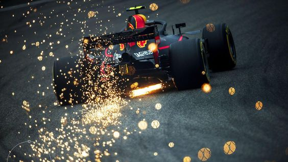

Olá! Parece que não posso me identificar, mas preciso fazer com que você, caro visitante e avaliador desta atividade possa entender quem sou. Okay então.
Apenas para te situar, abaixo você verá 4 sessões, sendo elas "Hobbies", "Inspirações", "Profissional" e "Cultural". Na primeira brevemente indicarei meus hobbies preferidos; na segunda apresento pessoas de extrema importância para mim (após meus pais), que ajudaram a moldar quem eu sou hoje e quem eu pretendo ser no futuro; na terceira sessão você entenderá de forma breve meus antigos anseios profissionais, e atuais; e por fim, na quarta mostrarei desde filmes até músicas que escuto.
Obs: passe o mouse em cima das imagens e leia as descrições. As imagens da segunda linha de cada sessão te levarão a conteúdos no YouTube e outros sites :)
")


")